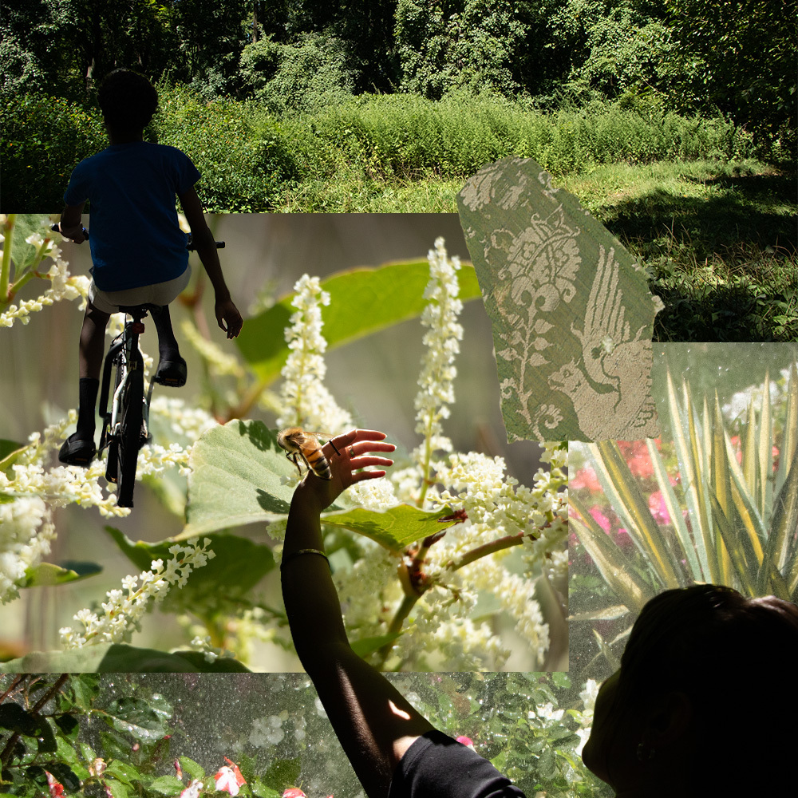
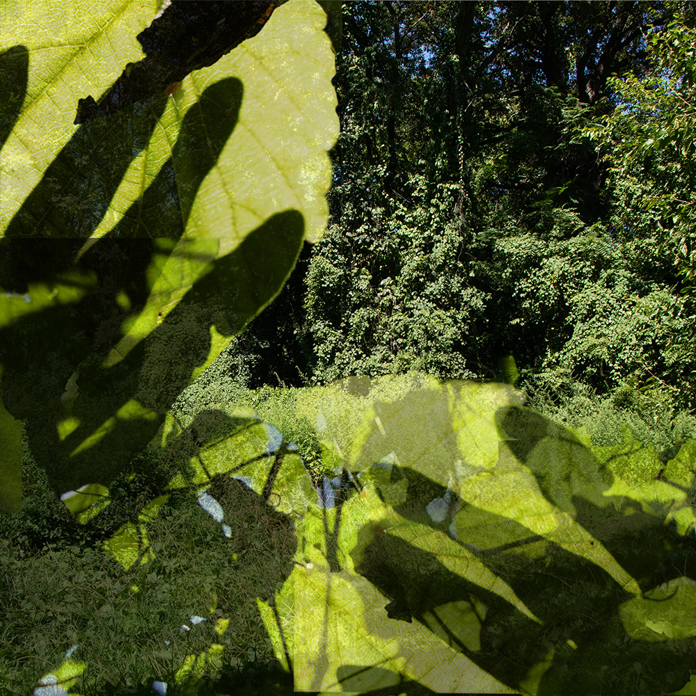
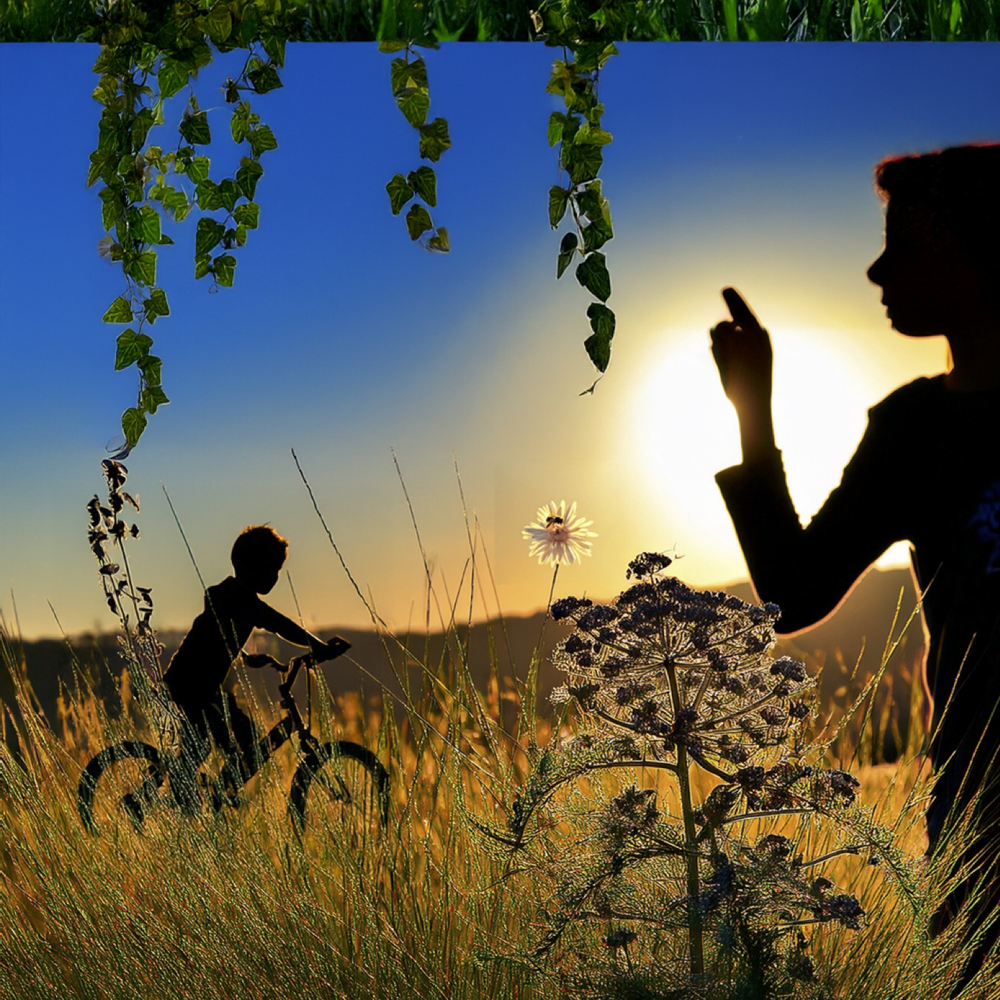

Images
Pelham Bay Collage






These are photographs I took last summer while hiking in Pelham Bay Park on a warm sunny day. These images represent my connection to nature and my respect for the ecosystems I inhabit. I combined 5 of my own personal images in a collage style with one image of a historical textile from the Cooper Hewitt Collection. I was inspired by the beauty of Pelham Bay, and my spiritual connection to both nature and textiles. I wanted to represent both sides of myself as they deeply inform my identity as a textile artist and gardener.
_____Edited in Photoshop_____